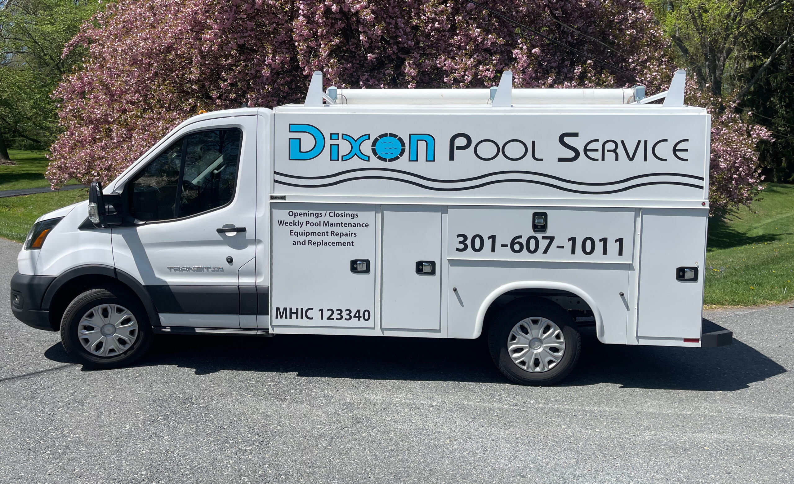

Pool care for Frederick & surrounding counties
Take care of your pool. Enjoy more summer.
Openings, closings, weekly maintenance, equipment work, automation, heater repair, cleaning, and safety covers from Dixon Pool Service.
Pool services
Pool care through every season
Choose from seasonal openings and closings, weekly maintenance, equipment work, pool cleaning, and safety covers.
Pool Closings
Weekly Pool Maintenance
Equipment Repair & Replacement
Pool Automation Repairs & Upgrades
Heater Repairs
Custom Mesh Safety Pool Covers
Pool Cleaning (one-time / party service)
Safety Cover Installation
Established locally
A family pool service business since 2005
Client feedback
What customers say
★★★★★
“We have been using Dixon Pool Service for almost 7 years. They always do an outstanding job opening and closing our pool each season. They are prompt, professional, and leave the pool looking spectacular every time. Their customer service …”
★★★★★
“Tom Dixon Jr and Dixon pool service is a gem. The father taught his son well and is a true professional. I needed new anchors drilled into my new pavers and a new pool cover. Had several estimates. Tom uses better loop loc covers and …”
★★★★★
“these guys are on the ball and do everything you expect and more.we have issues with the Polaris and heater, they handled both of them quickly. then we needed a new solar pool cover, they installed it quickly cutting it to conform to the pool shape. High marks from us!”
Ready to talk about your pool?
Call Dixon Pool Service during listed business hours.